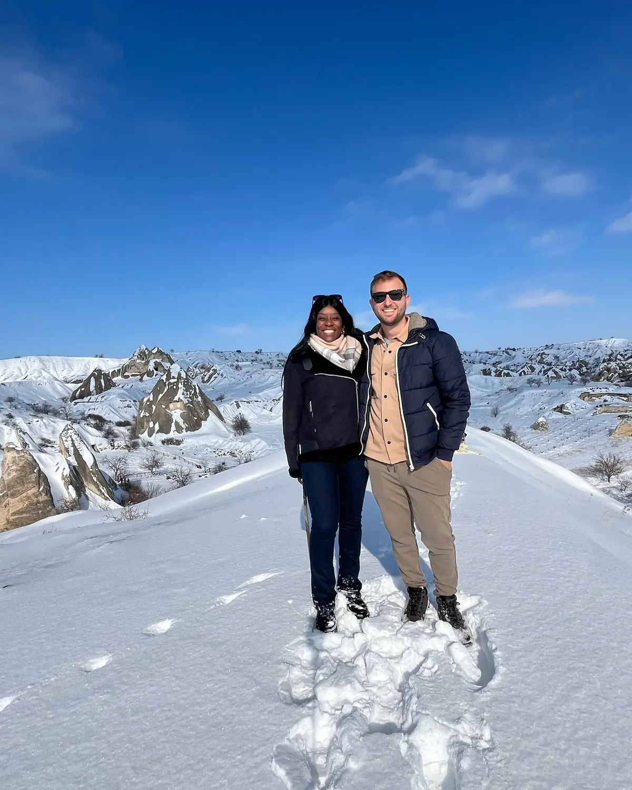
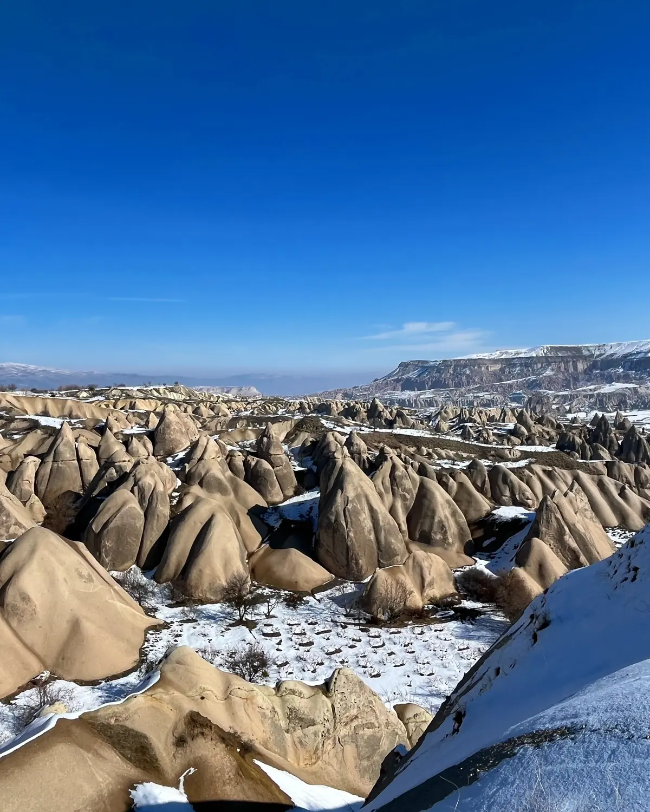
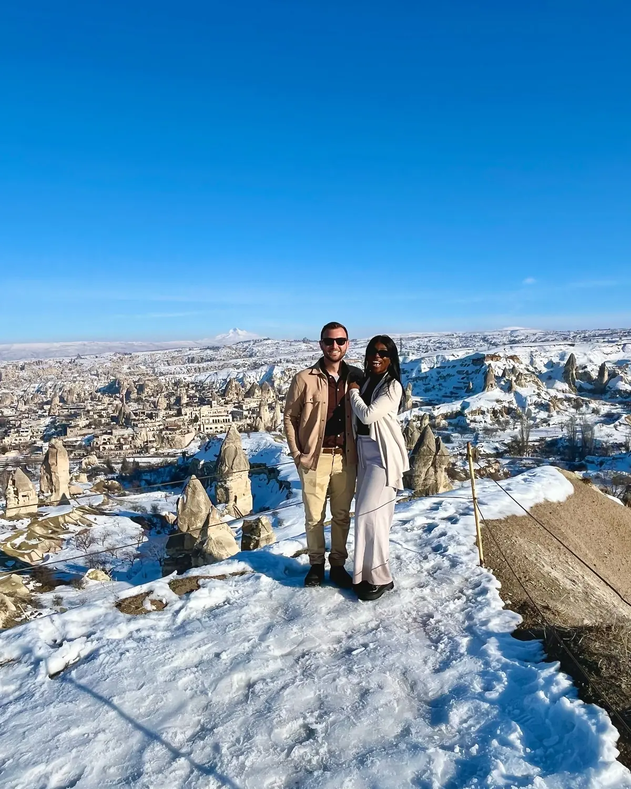
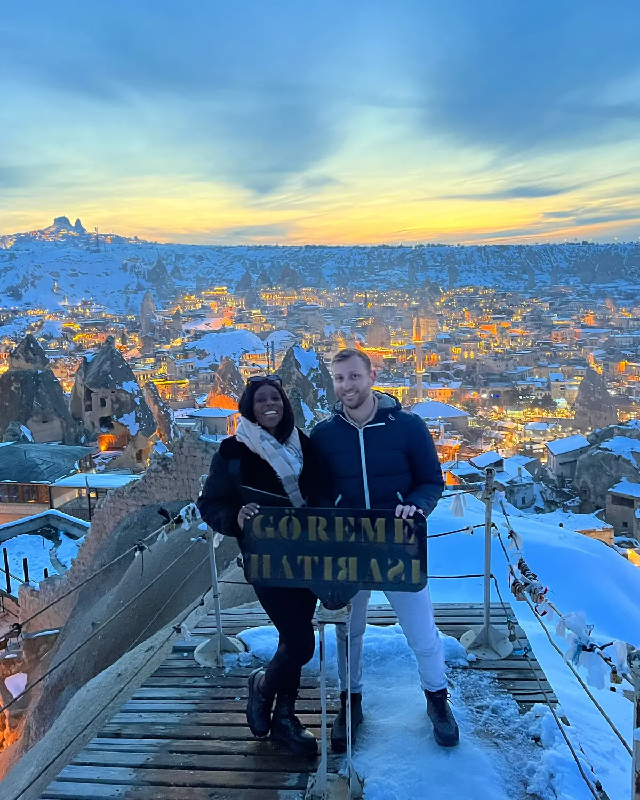

The highlight01
Göreme & the fairy chimneys
📍 Göreme & the surrounding valleys
The heart of Cappadocia is Göreme, ringed by valleys full of "fairy chimneys" — surreal cone-shaped rock towers, many hollowed into homes and churches over centuries. Under fresh snow it was pure magic. The town-view sunset points (we found a great one for the classic Göreme sign shot) are unmissable. A combined Red & Green day tour is the easiest way to string together the best valleys, viewpoints and villages in one go.
Surreal rock towersMagical in the snow